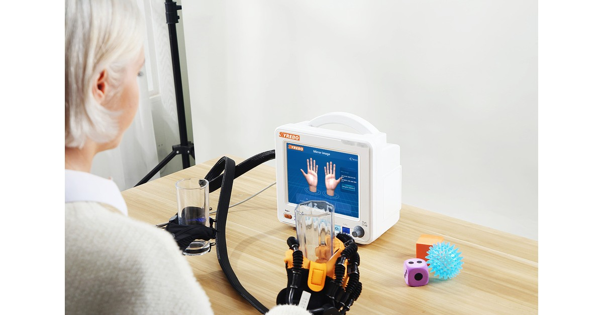

จากบทความวิจัย
Effects of robotic glove-assisted task-oriented mirror therapy on hand motor function in sub-acute stroke patients: Randomised controlled trial
Abdul Rehman, Furqan Ahmed Siddiqi, Saman Shaukat
Hong Kong Physiotherapy Journal, 2026
DOI: 10.1142/S1013702526500149
ยังไม่ยืนยันสิทธิ์การนำภาพจากบทความมาใช้ซ้ำ จึงไม่มีภาพดังกล่าวในหน้านี้

ผู้เข้าร่วม 30 คนในระยะกึ่งเฉียบพลันถูกสุ่มให้รับการบำบัดด้วยกระจกเงาแบบเน้นกิจกรรมที่ใช้ถุงมือหุ่นยนต์ช่วย หรือการบำบัดด้วยกระจกเงาแบบเน้นกิจกรรมเพียงอย่างเดียว หลังแปดสัปดาห์ บทคัดย่อรายงานความแตกต่างภายในกลุ่มและระหว่างกลุ่มใน Box and Block Test, FMA-UE และ ARAT การทดลองไม่มีการปกปิดและมีกลุ่มตัวอย่างขนาดเล็ก ค่า p และขนาดผลที่แน่นอนในบทคัดย่ออ่านได้ไม่ครบ หน้านี้จึงไม่ระบุ บทคัดย่อของสำนักพิมพ์ที่เข้าถึงได้ไม่ระบุผู้ผลิตหรือรุ่นของอุปกรณ์
การบำบัดด้วยกระจกเงาแบบเน้นกิจกรรมเป็นโปรแกรมอยู่แล้ว การเพิ่มถุงมือจึงตั้งคำถามว่าการเพิ่มอุปกรณ์อีกหนึ่งชิ้นในโปรแกรมดังกล่าวสัมพันธ์กับความแตกต่างเพิ่มเติมในแบบประเมินหรือไม่ ไม่ใช่การเปรียบเทียบกับการไม่ฝึกมือเลย
เมื่อไม่มีการปกปิด ผู้ให้การรักษาและสภาพแวดล้อมในการประเมินอาจได้รับอิทธิพลจากความคาดหวัง แม้ระบุว่า “มีนัยสำคัญทางสถิติ” ในกลุ่มตัวอย่าง 30 คน ก็ยังต้องตรวจขนาดผลจากฉบับเต็มก่อนจะบอกได้ว่าความแตกต่างมากเพียงใด
การฝึกแบบเน้นกิจกรรมจัดการออกกำลังให้อยู่ในกิจกรรมที่คล้ายการใช้งานประจำวัน การบำบัดด้วยกระจกเงาใช้ภาพของแขนหรือขาข้างที่ไม่ได้รับผลกระทบเพื่อจัดความสนใจ เมื่อทั้งสองเป็นโปรแกรมเดียวกันอยู่แล้ว การเพิ่มถุงมือจึงตั้งคำถามว่าการเพิ่มอุปกรณ์อีกชิ้นสัมพันธ์กับความแตกต่างเพิ่มเติมในแบบประเมินหรือไม่ การออกแบบที่ไม่มีการปกปิดและตัวอย่าง 30 คนหมายความว่าคำว่า “มีความแตกต่าง” ยังไม่ใช่ผลยืนยัน
กลุ่ม A ได้รับการบำบัดด้วยกระจกเงาแบบเน้นกิจกรรมที่ใช้ถุงมือช่วย กลุ่ม B ได้รับการบำบัดด้วยกระจกเงาแบบเน้นกิจกรรม ทั้งสองกลุ่มได้รับการดูแลตามปกติ 30 นาที ตามด้วยการแทรกแซงที่จัดให้ 30 นาที วันละครั้ง สัปดาห์ละห้าวัน เป็นเวลาแปดสัปดาห์
ทั้งสองกลุ่มได้รับการดูแลตามปกติ 30 นาที ตามด้วยการแทรกแซงที่จัดให้ 30 นาที วันละครั้ง สัปดาห์ละห้าวัน เป็นเวลาแปดสัปดาห์ กลุ่ม A ได้รับการบำบัดด้วยกระจกเงาแบบเน้นกิจกรรมที่ใช้ถุงมือหุ่นยนต์ช่วย ส่วนกลุ่ม B ได้รับการบำบัดด้วยกระจกเงาแบบเน้นกิจกรรม บทคัดย่อของสำนักพิมพ์ที่เข้าถึงได้ไม่ระบุผู้ผลิตหรือรุ่นของถุงมือ ต้องตรวจอุปกรณ์จากบทความฉบับเต็ม
ผลวัดทั้งสามตามชื่อทางคลินิกคือ Box and Block Test (BBT) สำหรับหยิบและย้ายบล็อก แบบประเมิน Fugl-Meyer แขนและมือ (FMA-UE) สำหรับความบกพร่องด้านการเคลื่อนไหว และ Action Research Arm Test (ARAT) สำหรับการกำ จับ หยิบหนีบ และการเคลื่อนไหวมัดใหญ่
รูปแบบการศึกษา
การเปรียบเทียบแบบสุ่มโดยใช้ซองปิดผนึกและไม่มีการปกปิด คำถามคือการบำบัดด้วยกระจกเงาแบบเน้นกิจกรรมเมื่อมีหรือไม่มีถุงมือหุ่นยนต์ ผลวัดคือ Box and Block Test (BBT), FMA-UE และ Action Research Arm Test (ARAT)
กลุ่มตัวอย่างและกำหนดการ
ผู้เข้าร่วม 30 คน ฝึกวันละหนึ่งครั้ง สัปดาห์ละห้าวัน เป็นเวลาแปดสัปดาห์ ไม่พบบทความฉบับเต็ม จึงไม่อนุมานจำนวนผู้สำเร็จการศึกษา เหตุการณ์ไม่พึงประสงค์ หรือการติดตาม
ผลการศึกษาหลัก
บทคัดย่อรายงานการเปลี่ยนแปลงในทั้งสองกลุ่มและความแตกต่างระหว่างกลุ่มที่ระบุว่ามีนัยสำคัญทางสถิติ แบบประเมินสามชนิดครอบคลุมการหยิบวาง ความบกพร่องด้านการเคลื่อนไหว และกิจกรรมของแขน เนื่องจากบทคัดย่อของสำนักพิมพ์แสดงค่า p ไม่ครบ หน้านี้จึงไม่ระบุค่า p หรือขนาดผล ผู้ผลิตและรุ่นของอุปกรณ์ยังต้องตรวจยืนยันจากบทความฉบับเต็ม
คำถามนี้ใกล้เคียงกับทางเลือกทางคลินิก: เมื่อมีการบำบัดด้วยกระจกเงาแบบเน้นกิจกรรมอยู่ในแผนแล้ว บทคัดย่อรายงานความแตกต่างหลังเพิ่มถุงมือหรือไม่ ข้อความสาธารณะอาจกล่าวว่าบทคัดย่อรายงานผลระหว่างกลุ่ม แต่ต้องระบุด้วยว่าไม่มีการปกปิด กลุ่มตัวอย่างเล็ก และยังไม่ได้ตรวจฉบับเต็ม
นักบำบัดอาจอภิปรายจากบทคัดย่อได้ว่า เมื่อมีการบำบัดด้วยกระจกเงาแบบเน้นกิจกรรมในตารางแล้ว การเพิ่มถุงมือถูกรายงานว่ามีความแตกต่างระหว่างกลุ่มหรือไม่ ข้อความสาธารณะต้องระบุการออกแบบที่ไม่มีการปกปิด ผู้เข้าร่วม 30 คน ขนาดผลที่ยังไม่ได้ตรวจ และรุ่นที่ยังไม่ยืนยัน ค่า p ที่อ่านไม่ได้จะไม่ถูกเติมในเอกสารส่งต่องานหรือเอกสารผลิตภัณฑ์
ข้อจำกัด ไม่มีการปกปิด จึงอาจมีความคาดหวังส่งผลต่อการให้การรักษาและการประเมิน ผู้เข้าร่วม 30 คน ผู้ผลิตและรุ่นอุปกรณ์ ขนาดผลที่แน่นอน เหตุการณ์ไม่พึงประสงค์ และการติดตามยังไม่ได้ตรวจจากฉบับเต็ม ไม่สร้างค่า p ที่อ่านไม่ได้ขึ้นเอง